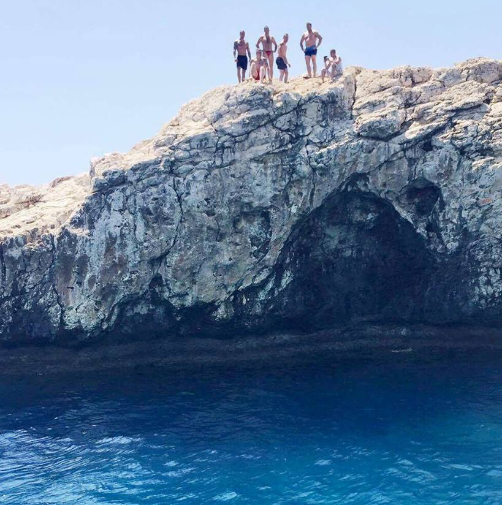
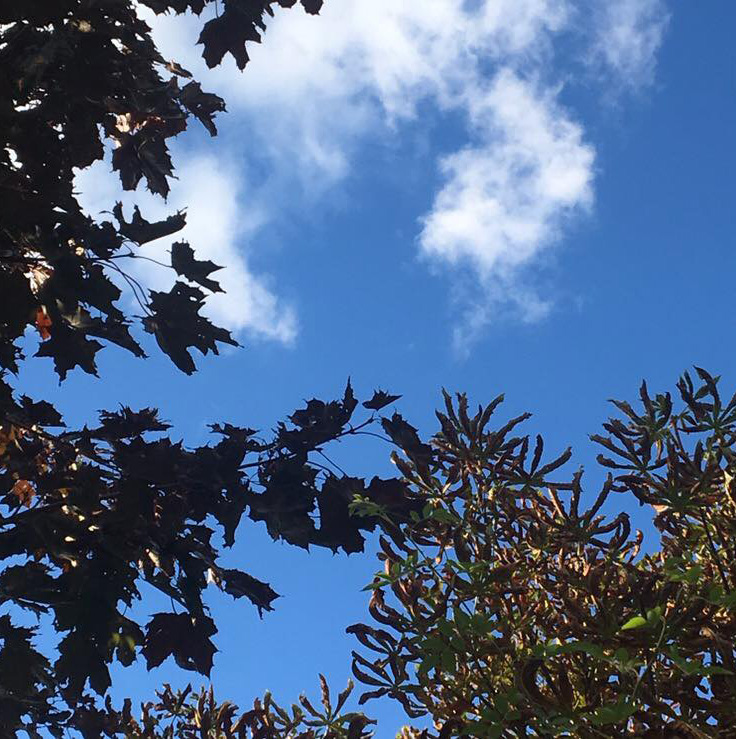

EMMA SØVSØ MÜLLER
VERDEN I BLÅ NUANCER
Projektet ”Verden i blå nuancer” er et projekt som er jeg kommet på fornyligt.
Projektet går ud på, at samle en masse billeder fra forskellige steder i verden,
som fælles har blå nuancer i sig. Planen er ikke kun at det skal være billeder
af natur, men også af mennesker, tøj, bygninger og lign på længere sigt.

